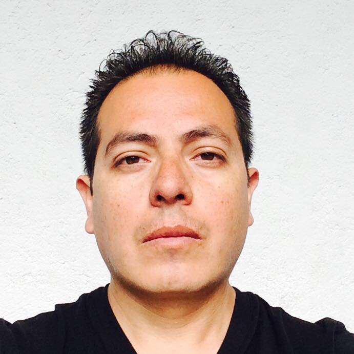

Curriculum Vitae

Analista Digital
Estudios Actuales
- Oct 2017
World Tech Makers
Front-End
Estudios Profesionales
- Sep 2007
Universidad Autónoma Metropolitana, Unidad Azcapotzalco
Ingeniería Física
Diplomados, Certificaciones y Cursos
2016-2017
- Digital Business Academy
Diplomado de Inbound Marketing
- HubsPot
Certificación en Inbound
- Google
Analytics
Red de Búsqueda (AdWords)
- Association of Certified Fraud Examiners ACFE – Capítulo México
Uso de Redes Sociales en la Investigación de Fraudes
- Universidad Autónoma Metropolitana, Unidad Cuajimalpa
Validación de Ideas de Negocio
Modelo de Negocios con la Metodología Canvas
- Internet Academi iAi (ISDI)
Analítica Web y Herramientas de Medición online
Google Analytics I, II y III
Posiciones Académicas
2005-2015
- CECyTEM Cuautlitlan Izcalli
Profesor Titular
Departamento de Física
- Universidad Abierta y a Distancia México
Docente en Línea
Departamento de Ingeniería logística
- Instituto de Educación Media Superior IEMS
Profesor del sistema Semi-Escolarizado
Departamentop de matemáticas
- Instituto Tecnol´ogico de Tláhuac III
Profesor de Asignatura “A”
Departamento de Matemáticas
- Centro de Bachillerato Tecnológico, CBT Jaime Keller Torres
Profesor Titular “B”
Departamento de Matemáticas
- Universidad Autónoma Metropolitana, Unidad Cuajimalpa
Profesor Titular “A” de Tiempo Parcial
Departamento de Matemáticas
- Universidad Autónoma Metropolitana, Unidad Cuajimalpa
Ayudante Nivel “A” de Tiempo Parcial
Departamento de Matemáticas
Ponecias
2008-2014
- Cartel: Caracterización de una red neuronal recurrente bidimensional, UAM-CUA, VII Semana de Computación y Matemáticas Aplicadas, Departamento de Matemáticas Aplicadas, 6 de Junio.
- Certificate. Massive Open Online Course: Introduction to Dynamical Systems and Chaos, Santa Fe Institute, Winter 2014, 6 Jan to 1 Apr.
- Curso Teórico: “La tipificación de microorganismos mediante Electroforésis de Campos Pulsantes en minigeles (miniECP)”, UACM, ICyT y CDEDF, 30 de Julio al 03 de Agosto (20 hrs)
- Ponencia en el 3er Congreso Internacional de Transporte, “Perspectivas y Equilibrio de la Movilidad Urbana Sustentable”, Asociación Mexicana de Transporte y Movilidad(AMTM), 19, 20 y 21 de Mayo.
- Ponencia “Limites inversos Aplicados a la Economía” en el Seminario de Investigación Científica y Tecnológica en el X aniversario de la UACM, del 6 al 8 de Abril.
- Ponencia en el 1ro y 2do Simposio de Tecnología Avanzada, Tema: “Síntesis de ´Oxido de Circonio ZrO2 para Dosimetría de Electrones en Radioterapia “. CICATA-IPN, del 16 al 20 Junio y del 28 de Noviembre al 5 de Diciembre.